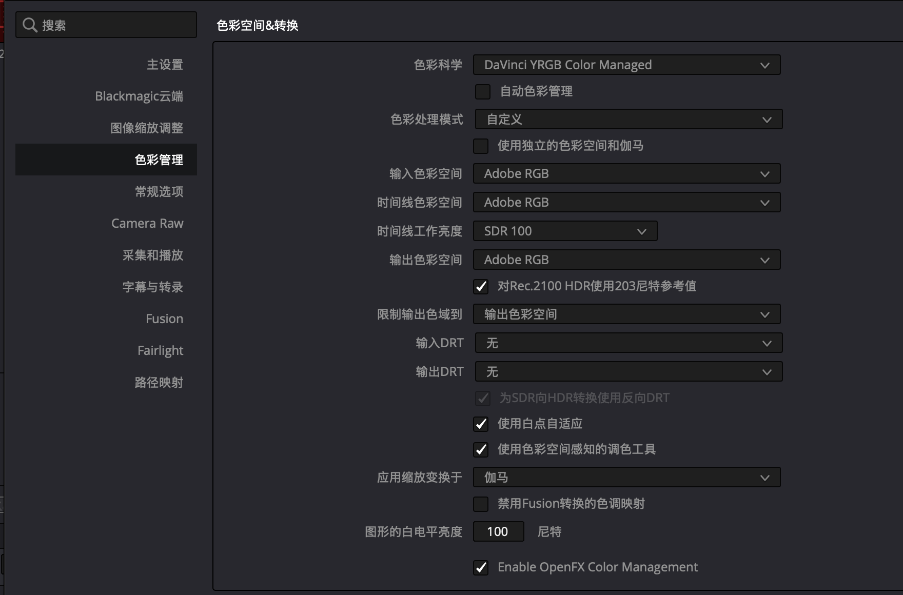

DaVinci Resolve 是一款免费而强大的视频编辑软件，一直以来都安装在我的 Mac 系统中。今年 DaVinci Resolve 更新到版本 21 后，功能越发强大，特别是增加了独立的照片面板。对于摄影爱好者来说，这无疑是个福音。我也看到网上出现了不少使用 DaVinci Resolve 为照片调色的教程。
我原本主要使用 DxO PhotoLab 调整照片，有时还会在 Affinity Photo 中进行进一步编辑。不过，大多数情况下，PhotoLab 已经能够满足我的需要。
直到最近，我想学习如何制作自己的调色 LUT，在网上查找资料时，发现 DaVinci Resolve 对 LUT 的支持非常完善，于是决定使用它来完成这项工作。
在学习过程中，出乎意料的是，我发现 DaVinci Resolve 的调色功能相当强大，甚至超出了我目前使用的 PhotoLab 9。仅色轮调色工具就包括一级色轮、Log 色轮和 HDR 色轮，可以针对画面的不同亮度区域进行更细致的调整。（PhotoLab 10 据说也在调色方面进行了较大升级。）
ENGLISH
DaVinci Resolve is a powerful video editing application, and it has been installed on my Mac for quite some time. With the release of version 21 this year, it has become even more capable. One particularly welcome addition for photographers is a dedicated Photo page. I have also noticed more tutorials showing how DaVinci Resolve can be used for still-photo color grading.
Until now, I have done most of my photo editing in DxO PhotoLab, occasionally moving into Affinity Photo for further adjustments. In most cases, however, PhotoLab has been more than sufficient.
Recently, I wanted to learn how to create my own color grading LUTs. After looking into the available tools, I found that DaVinci Resolve offers comprehensive LUT support, so I decided to use it for the task.
What surprised me during the process was just how powerful its grading tools are—even for still photography. Compared with the version of PhotoLab I currently use, the range of controls in DaVinci Resolve is impressive. Its grading tools include the primary color wheels, Log wheels, and HDR wheels, allowing more targeted adjustments across different tonal ranges. (PhotoLab 10 is also said to bring significant improvements to its color grading tools.)
一、PhotoLab：RAW 基础调整与 TIFF 导出
在这套 LUT 制作流程中，需要在 PhotoLab 与 DaVinci Resolve 之间切换。最重要的一点，是让两款软件使用的色彩空间保持一致。
首先，在 PhotoLab 中对相机拍摄的 RAW 文件进行基础调整，包括曝光、反差、白平衡等。这一步的目的，是让照片达到相对正常、自然的基础状态，而不是在这里完成最终的风格化调色。
基础调整完成后，我会从同一场景中选择一张具有代表性的照片作为调色样本，并将它导出为 16-bit TIFF。导出时，根据后续工作流程选择 sRGB 或 Adobe RGB。我的这套流程目前以 Adobe RGB 为例。
ENGLISH
1. PhotoLab: RAW Preparation and TIFF Export
This workflow involves moving between PhotoLab and DaVinci Resolve. The key is to keep the color-space settings consistent between the two applications.
First, I make basic adjustments to the camera's RAW file in PhotoLab, including exposure, contrast, and white balance. The aim is to establish a natural, balanced starting point rather than to create the final look at this stage.
Once the basic adjustments are complete, I select a representative image from the scene and export it as a 16-bit TIFF. The export color space can be either sRGB or Adobe RGB, depending on the intended workflow. In the example documented here, I use Adobe RGB.
二、DaVinci Resolve：色彩管理与 LUT 制作
打开 DaVinci Resolve 后，按以下步骤操作：
1. 新建一个工程。
2. 点击右下角的齿轮按钮，进入项目设置，找到「色彩管理」页面，并按照下图设置。这里的设置是为了让 DaVinci Resolve 与 PhotoLab 使用相同的色彩空间。
3. 切换到照片面板，在左侧媒体夹区域单击右键，选择「导入媒体」，导入刚才从 PhotoLab 导出的 TIFF 文件。
4. 在导入的媒体上单击右键，选择「使用选定片段创建新相册」。
5. 切换到「调色」面板，对照片进行调色。具体的调色方法取决于个人需要，这里不作展开。
6. 调色完成后，在相册区域的照片上单击右键，选择「生成 LUT」，再选择「33 点立方体」。

生成 LUT 时可以选择 17 点、33 点或 65 点立方体。点数越高，LUT 的采样网格越密，能够描述的颜色映射通常也越细致，同时文件体积会相应增加。对于一般摄影调色用途，我选择 33 点，作为精细程度与文件大小之间的折中。
完成以上操作后，就得到了一个 `.cube` 格式的 LUT 文件。
ENGLISH
2. DaVinci Resolve: Color Management and LUT Creation
Open DaVinci Resolve and follow these steps:
1. Create a new project.
2. Click the gear icon in the lower-right corner to open Project Settings. Go to the Color Management page and configure the settings as shown in the screenshot. The purpose is to use a consistent color space in both DaVinci Resolve and PhotoLab.
3. Switch to the Photo page. In the Media Pool area on the left, right-click and choose Import Media to import the TIFF file exported from PhotoLab.
4. Right-click the imported media and choose Create New Album with Selected Clips.
5. Switch to the Color page and grade the image. The grading approach depends on the desired look, so I will not cover the actual adjustments here.
6. Once the grade is complete, right-click the image in the album area, choose Generate LUT, and select 33 Point Cube.
The screenshot shows the color management settings used in this project.
The LUT generation menu offers 17-point, 33-point, and 65-point cubes. A higher point count provides a denser sampling grid and can describe more detailed color transformations, but it also increases the file size. For general photographic grading, I use the 33-point option as a practical balance between precision and file size.
The result is a LUT file in the `.cube` format.
三、PhotoLab：导入和应用 LUT
接下来，将生成的 LUT 导入 PhotoLab。
在 PhotoLab 的颜色面板中找到「LUT 颜色」，将类型设为「自定义」，然后导入刚才生成的 `.cube` 文件即可。
这里需要特别注意「LUT 色彩空间」选项。它必须与制作 LUT 时所使用的色彩空间相匹配。例如，这套流程使用 Adobe RGB，那么在 DaVinci Resolve 和 PhotoLab 中，都应按照 Adobe RGB 的工作流程进行设置。
需要区分的是：这里选择的是 LUT 所对应的色彩空间，并不是简单地把照片的导出色彩空间改成 Adobe RGB。照片本身的输入、处理和导出设置仍应根据实际工作流程确定。
ENGLISH
3. PhotoLab: Importing and Applying the LUT
The final step is to import the LUT into PhotoLab.
In PhotoLab's Color panel, find LUT Color, set the type to Custom, and import the `.cube` file created in DaVinci Resolve.
Pay particular attention to the LUT Color Space setting. It should match the color space used when creating the LUT. For example, since this workflow uses Adobe RGB, the corresponding settings in DaVinci Resolve and PhotoLab should follow the Adobe RGB workflow.
It is important to distinguish the LUT's working color space from the export color space of the image itself. Selecting a color space for the LUT does not simply change the image's export color space; the image's input, processing, and export settings should still be configured according to the intended workflow.
四、实际测试
为了验证这套工作流程，我使用同一张照片进行了对照测试：一张是在 DaVinci Resolve 中直接完成调色的结果，另一张是在 DxO PhotoLab 中加载生成的 LUT 后得到的结果。
从实际画面来看，两者的颜色基本一致。红色墙面、绿色树叶和蓝色天空都没有出现明显的色彩偏移。虽然局部亮度可能略有差异，但整体观感已经非常接近。
这次测试说明，目前这套色彩空间设置与 LUT 转换流程能够满足我的使用需要。今后制作和使用其他 LUT 时，也可以此作为基础工作流程。
ENGLISH
4. Practical Comparison
To check the workflow, I made a side-by-side comparison using the same photograph. One version was graded directly in DaVinci Resolve; the other was processed in DxO PhotoLab using the LUT generated in Resolve.
Visually, the colors in the two versions are very close. The red wall, green foliage, and blue sky show no obvious color shifts. There may be slight differences in local brightness, but the overall appearance is highly consistent.
This test suggests that the current color-management settings and LUT workflow are suitable for my needs. I can use them as a reference for creating and applying other LUTs in the future.